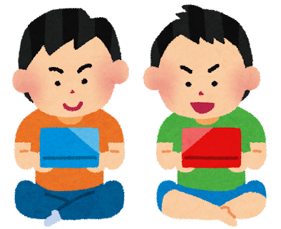

趣味紹介

サウナ
サウナブームに乗って、はじめて見たら意外と長く続きました。水風呂の恐怖を飛び越えた先に、”楽園”があります。新潟ではよく「じょんのび館」に言ってました！最近、サウナの聖地「サウナしきじ」に行ったのですが本当に水風呂の良さが良すぎました。
(写真はマイサウナセットたち)

水族館巡り
水族館の大水槽の前でぼーっとするのが最高です。最近は一眼レフで撮ることもあるのですが、暗いし魚は止まってくれないしでいい写真がありません。上は唯一キレイに撮れた加茂水族館のクラゲの写真です。一眼レフ得意な方いれば教えてください・・・。

レース観戦
ハマりたてほやほやです。SuperFormula、SuperGT、去年は鈴鹿F1見に行きました。ドライバーたちの１ポイントを争う熱い戦いに毎戦感動しています。あと、現地観戦した時のお祭りみたいな雰囲気もたまらないです。えぐい速さの車たちとエンジン音がたまりません。臨場感、エモい

ゲーム
最近プレイしているのは原神、マイクラ、オーバークック、スプラトゥーンです。大人数でプレイするのが好きで、家族や友達巻き込んでAmongus、クトゥルフ、他ボドゲもしております。でも人生で一番プレイしたのはソニックアドベンチャー２です・・・ソニックとシャドウのビジュ・・・最高すぎです・・・。